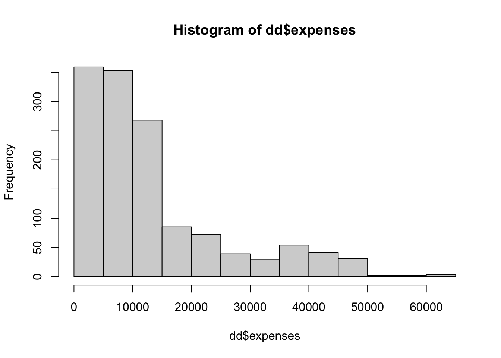
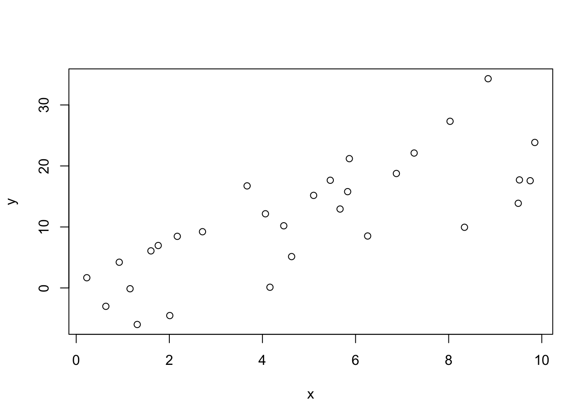
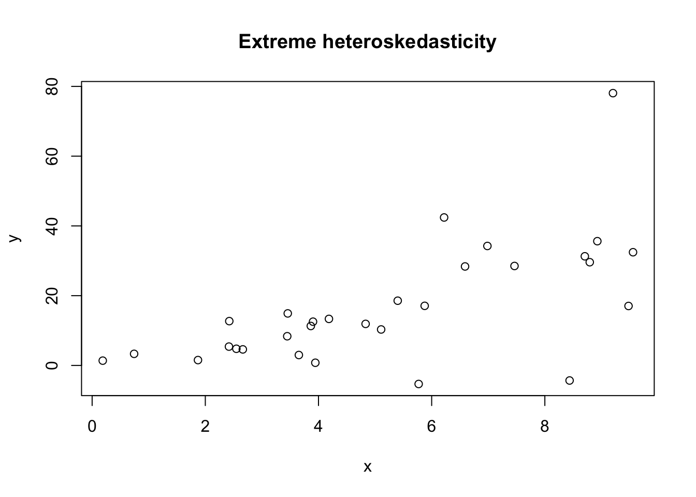
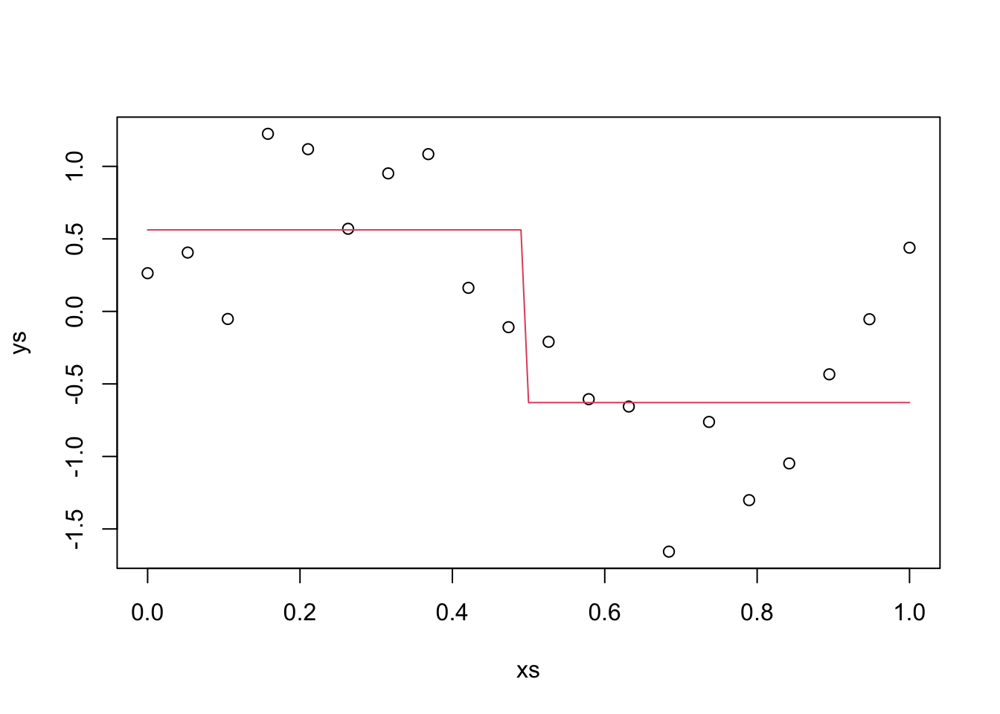
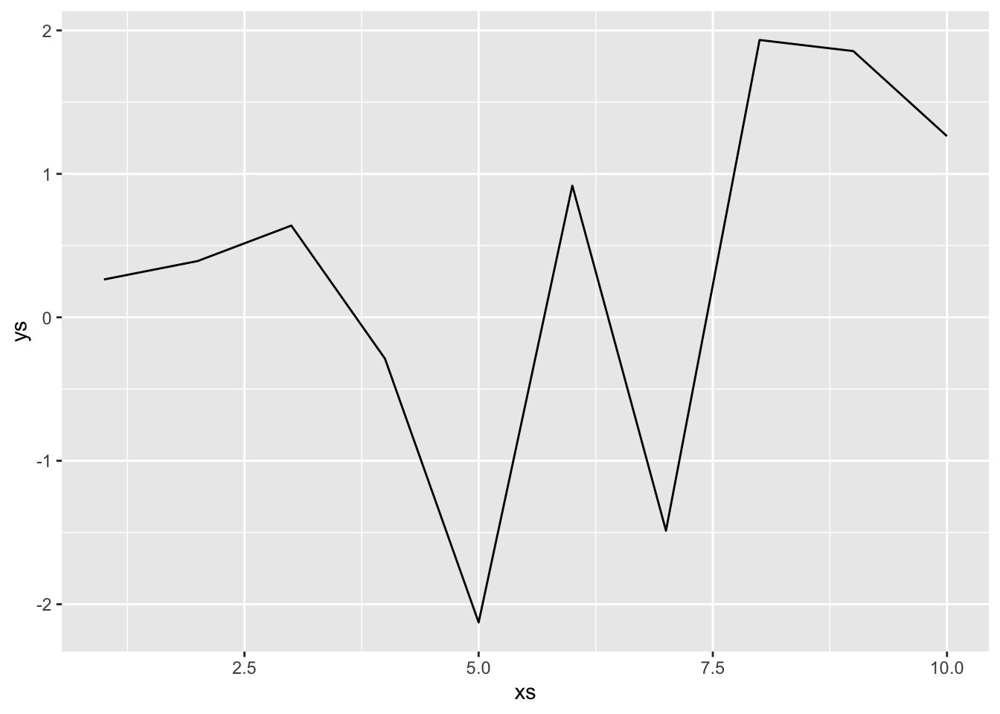
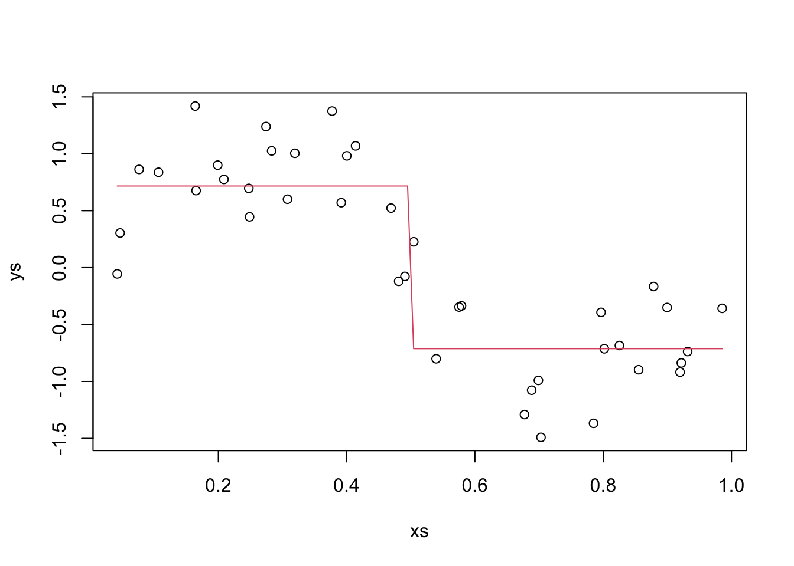

Chapter 4 Intro to Predictive Modeling
In Chapter 3 we saw that it can be hard to decide how to predict future values from a regression model. The reason is that our model isn’t constructed so as to efficiently predict future values, but rather for other goals. In this chapter, we focus on doing regression for predictions.
4.1 Comparing Two Models
Let’s return to the ISwR::cystfibr data set. We imagine that we want to determine whether height or weight is a better predictor for pemax.
Our idea is that we want to split the data set into two parts. One of the parts is the training data, and the other part is the testing data. We are required to build our model 100% solely on the training data, and we will determine how will it can predict future values based on the testing data. As a first step, let’s imagine that our training data consists of all of the data except for the 6th observation. The test data is then the data that is not in the training data, that is, the 6th observation.
We build our two models (based on height or weight separately), and we compute the error when predicting the value in the test data.
mod1 <- lm(pemax ~ height, data = train_data)
mod2 <- lm(pemax ~ weight, data = train_data)
predict(mod1, newdata = test_data) - test_data$pemax #this is the error using model 1## 6
## 8.621298## 6
## 4.775489We see that model 1 did a better job predicting the value of pemax in this case than model 2 did. Now, we repeat this for every observation. That is, for each observation, we remove it from the data set, train our model, and compute the error when predicting the new value. This is called Leave one out cross validation (LOOCV).
Here are the details on how to do it in R.
height_errors <- sapply(1:nrow(cystfibr), function(x){
train_data <- cystfibr[-x,]
test_data <- cystfibr[x,]
mod <- lm(pemax ~ height, data = train_data)
predict(mod, newdata = test_data) - test_data$pemax
})
height_errors## 1 2 3 4 5 6 7
## -33.920085 -17.163862 -20.016129 -2.007188 -11.025840 8.621298 33.154993
## 8 9 10 11 12 13 14
## -3.637413 34.297888 16.851617 2.191805 20.110890 16.569973 35.471233
## 15 16 17 18 19 20 21
## -19.019928 -25.722616 -39.286566 11.783307 -4.213606 28.258534 47.718375
## 22 23 24 25
## -30.346873 -34.178520 38.018016 -68.435878weight_errors <- sapply(1:nrow(cystfibr), function(x){
train_data <- cystfibr[-x,]
test_data <- cystfibr[x,]
mod <- lm(pemax ~ weight, data = train_data)
predict(mod, newdata = test_data) - test_data$pemax
})
weight_errors## 1 2 3 4 5 6
## -18.1454890 -7.0206108 -22.3306483 -2.4888298 -6.4368299 4.7754887
## 7 8 9 10 11 12
## 36.7303628 -13.4657504 24.9013559 6.2140517 0.9329037 24.5308972
## 13 14 15 16 17 18
## 18.5253420 47.1982421 -29.0366653 -30.4253120 -50.6977861 16.5412245
## 19 20 21 22 23 24
## -16.6026998 23.6413130 46.8093696 -23.4400631 -17.4084988 31.0813452
## 25
## -57.0067353Now we need to decide which errors are “smaller”. A common measurement is the mean-sqaured error (MSE), or equivalently the root mean-squared error (RMSE). Let’s use it.
## [1] 28.68975## [1] 27.5804And we see that the MSE for using just weight is slighlty better than the MSE for using just height.
Next, let’s get a common misconception out of the way. Many people who haven’t worked with things like this before would think that it would be best to build the model on all of the variables. Let’s do that and compute the RMSE.
full_errors <- sapply(1:nrow(cystfibr), function(x){
train_data <- cystfibr[-x,]
test_data <- cystfibr[x,]
mod <- lm(pemax ~ ., data = train_data)
predict(mod, newdata = test_data) - test_data$pemax
})
sqrt(mean(full_errors^2))## [1] 32.39895We see that the RMSE is about 17% higher with the full model than it is with the model using just weight!
Exercise 4.1 The aim of this exercise is to illustrate the difference between using \(p\)-values for determining whether to select variables, and using estimates of MSE.
Find the LOOCV estimate for the MSE when estimating
pemaxviaweight + bmp + fev1 + rv, and compare to just usingweight.Use
lmto modelpemax ~ weight + bmp + fev1 + rvand observe thatrvis the only non-significant variable. Remove it, and estimate the MSE via LOOCV again. Did removingrvimprove the estimate of MSE?
LOOCV works well for small data sets such as cystfibr, but can become unwieldy when the data set is large and the method of estimation is involved. For each model that we want to test, we would need to build it \(n-1\) times, where \(n\) is the number of observations. Let’s examine a couple of alternatives for when LOOCV takes too long.
We can also use LGOCV, which stands for leave group out cross validation. As you might guess, this means that instead of leaving one observation out and building the model, we leave a group of observations out. Within this paradigm, there are several ways to proceed.
We could randomly select 70% to leave in, and leave 30% out, and estimate the MSE based on this split.
We could repeatedly select 70% to leave in, estimate the MSE based on the 30% left out each time, and take the average.
We could split the data into \(k\) groups, and estimate the MSE based on leaving out each of the groups separately, and take the average.
We could repeatedly split the data into \(k\) groups, and estimate the MSE based on leaving out each of the groups separately, and take the average. Then take the average of the averages.
We could bootstrap resample from the data set. A bootstrap resample is one that resamples observations from a data set with replacement. So, the same observation can appear multiple times in the resampled version. In this case, generally about 38% of the observations do not appear in the resampled version (so-called out of bag), and they can be used to estimate the error of estimation.
Let’s look at how to implement these in R. We will use the insurance data set that is available on the course web page.
## age sex bmi children
## Min. :18.00 Length:1338 Min. :16.00 Min. :0.000
## 1st Qu.:27.00 Class :character 1st Qu.:26.30 1st Qu.:0.000
## Median :39.00 Mode :character Median :30.40 Median :1.000
## Mean :39.21 Mean :30.67 Mean :1.095
## 3rd Qu.:51.00 3rd Qu.:34.70 3rd Qu.:2.000
## Max. :64.00 Max. :53.10 Max. :5.000
## smoker region expenses
## Length:1338 Length:1338 Min. : 1122
## Class :character Class :character 1st Qu.: 4740
## Mode :character Mode :character Median : 9382
## Mean :13270
## 3rd Qu.:16640
## Max. :63770The first think that I notice is that the expenses look right skew. Let’s plot a histogram.

And we can compute the skewness of the data via
## [1] 1.512483That is moderately skew; about like an exponential rv.
## [1] -0.08989552Yep. It might be worth taking the log of expenses and modeling that instead, but I will leave that as an exercise.
If we want to do repeated 70/30 splits, then that is perhaps easiest to do by hand.
N <- nrow(dd)
train_indices <- sample(1:N,ceiling(N * .7))
test_indices <- setdiff((1:N), train_indices)
mod <- lm(expenses ~ ., data = dd)
errors <- predict(mod, newdata = dd[test_indices,]) - dd$expenses[test_indices]
sqrt(mean(errors^2))## [1] 5560.017We see that with the first train/test split, we have an estimated RMSE of 5560. (For comparison purposes, if we simply took the mean value, then the RMSE would be about $12K).
Now, we can repeat the train/test split a bunch of times… say 50. If our model building procedure were slower than this, we might not be able to do 50.
rmse <- replicate(50, {
train_indices <- sample(1:N,ceiling(N * .7))
test_indices <- setdiff((1:N), train_indices)
mod <- lm(expenses ~ ., data = dd)
errors <- predict(mod, newdata = dd[test_indices,]) - dd$expenses[test_indices]
sqrt(mean(errors^2))
})Once we have these values, we can compute the mean and standard deviation to get a feeling for the range of MSE that we would expect to get with this model.
## [1] 5997.849## 2.5% 97.5%
## 5459.578 6467.318## [1] 5429.902 6565.795We can either compute the 95% confidence interval of the RMSE from the quantiles or by taking two times the standard deviation. This is saying that we would be surprised if the true RMSE of this model on unseen, future data is less than $5500 or more than $6500
Exercise 4.2 Consider the insurance data set. Estimate the RMSE with error bounds when modeling expenses on the other variables after taking the log of expenses, using repeated LGOCV. Note that we will still want to get the RMSE of the estimate for expenses, not the log of expenses. Compare your answer to what we achieved in the previous example.
We could also do this for repeated \(k\)-fold CV, but let’s instead start using the caret function train. The train function is a powerful tool that allows us to train many types of models with different types of cross validation. This example is about as simple of an example as we can do.
## Loading required package: lattice##
## Attaching package: 'caret'## The following object is masked from 'package:purrr':
##
## liftrepeated_cv <- train(x = select(dd, -expenses),
y = dd$expenses,
method = "lm",
trControl = trainControl(method = "repeatedcv",
repeats = 5))
repeated_cv$results## intercept RMSE Rsquared MAE RMSESD RsquaredSD MAESD
## 1 TRUE 6077.754 0.7477876 4203.234 322.8255 0.04545884 176.8718From this table, we see that the repeated 10-fold CV estimated RMSE is 6073 with standard deviation 368. Recall that using repeated LGOCV, we got an estimated RMSE of 5998 and a standard deviation of 284.
Finally, let’s see what happens with the bootstrap, which is the default in caret for lm.
## intercept RMSE Rsquared MAE RMSESD RsquaredSD MAESD
## 1 TRUE 6164.278 0.7421946 4273.074 243.35 0.01755166 135.0012All three methods give relatively similar results in this case. We can guess that our RMSE on future, unseen data will be about \(\$6100 \pm \$600\).
4.2 A Brief Return to Inference
We begin by remembering how to construct a 95 percent confidence interval for the mean.
Example 4.1 Consider a confidence interval for the mean, created using t.test. We assume that the assumptions of t.test are met, and we find a 95 percent confidence interval.
## [1] -0.4913847 0.4050192
## attr(,"conf.level")
## [1] 0.95We can also compute a bootstrap confidence interval of the mean. We do so by resampling from the data (with replacement), and computing the mean each time. We then compute the appropriate quantiles of the means to get the bootstrap confidence interval.
## 2.5% 97.5%
## -0.4553680 0.3582321We see that the two methods give similar results. The booststrap method can sometimes be useful when the data does not meet the assumptions of t.test, but this is not a course in bootstrapping. The interested reader can consult Mathematical Statistics with Resampling and R for more information.
Next, we show how we can use resampling techniques to construct confidence intervals associated with regression. As an example, we show one way to use the bootstrap to create a confidence interval for the slope. We assume for simplicity that we have only one explanatory variable \(x\). We consider the observations \((x_1, y_1), \ldots, (x_n, y_n)\) to be typical of all observations that we could have observed. To bootstrap, we choose \(n\) of the observations with replacement and recompute the regression model. When doing so, we get a range of values that the slope could have been, and if we compute quantlies of those values, then that is a confidence interval for the slope.
Let’s again do it with simulated data that follows our assumptions for regression. If you run the following code several times, you will see that the bootstrap method gives similar results to confint in this case.

##
## Call:
## lm(formula = y ~ x)
##
## Coefficients:
## (Intercept) x
## -0.5609 2.4440slopes <- replicate(2000, {
df2 <- df[sample(1:nrow(df), replace = T),] #boostrap
mod <- lm(y ~ x, data = df2)
coef(mod)[2] #compute slope of bootstrapped data
})
quantile(slopes, c(.025, .975))## 2.5% 97.5%
## 1.758919 3.253526## 2.5 % 97.5 %
## x 1.674077 3.213971The confidence interval for slope is relatively robust to departures from assumptions, meaning that it often is approximately a 95 percent confidence interval even when normality, homoskedasticity, and few outliers for the model are not met. The next example shows one time where the coverage of the 95 percent confidence interval is not ideal, and compares the coverage to the bootstrap confidence interval.
Example 4.2 In the following example, we show that the effective type I error rate is about twice as high as it should be when we have strong heteroskedasticity.
x <- runif(30, 0, 10)
y <- 1 + 2 * x + rnorm(30, 0, x^1.5)
df <- data.frame(x = x, y = y)
plot(df, main = "Extreme heteroskedasticity")
mean(replicate(1000, {
x <- runif(30, 0, 10)
y <- 1 + 2 * x + rnorm(30, 0, x^1.5)
df <- data.frame(x = x, y = y)
mod <- lm(y ~ x)
ci <- confint(mod, parm = "x", level = .95)
ci[1] < 2 & ci[2] > 2
})) #should be 0.95## [1] 0.899Let’s see how the bootstrap confidence interval does. This takes a long time to run. We use the formula for the slope that we derived in Chapter 2 in order to speed it up, as well as running the loop in parallel. We see that the bootstrap confidence interval does better, but is still not perfect. It should have incorrectly rejected the null hypothesis 5 percent of the time.
## Loading required package: future##
## Attaching package: 'future'## The following object is masked from 'package:caret':
##
## cluster## Warning in checkNumberOfLocalWorkers(workers): Careful, you are setting up 10
## localhost parallel workers with only 8 CPU cores available for this R process
## (per 'system'), which could result in a 125% load. The soft limit is set to
## 100%. Overusing the CPUs has negative impact on the current R process, but also
## on all other processes of yours and others running on the same machine. See
## help("parallelly.maxWorkers.localhost", package = "parallelly") for further
## explanations and how to override the soft limit that triggered this warningmean(future.apply::future_replicate(1000, {
x <- runif(30, 0, 10)
y <- 1 + 2 * x + rnorm(30, 0, x^1.5)
df <- data.frame(x = x, y = y)
ci <- quantile(replicate(1000, {
df2 <- df[sample(1:30, replace = T),]
x <- df2$x
y <- df2$y
(sum(x* y) - 1/30 * sum(x) * sum(y))/(sum(x^2) - 1/30 * sum(x) * sum(x)) #faster than lm
}), c(.025, .975))
ci[1] < 2 && ci[2] > 2
}))## [1] 0.9024.3 Simulations of Expected MSE
In Section 4.1, we saw several methods for estimating the MSE or RMSE for models. One question that you may have is: which method should I be using? If we want to get error bounds for our estimate of RMSE, then we will need to use one that is repeated, but that still leaves repeated LGOCV, repeated \(k\)-vold CV, and repeated bootstrap. The type of model we are building can have an impact on our choice: if the model doesn’t handle data that is repeated well, then bootstrapping would not be a good choice, for example. If model accuracy is highly sensitive to sample size, then LGOCV might not be a good choice, as the model is built on data roughly 70-80% of the size of the original data set.
In this section, though, we will thouroughly examine the estimates for MSE in the case of a simple linear model \(y = 1 + 2x + \epsilon\), where \(\epsilon \sim N(0, \sigma = 3)\). We suppose that we have data \(\{(x_1, y_1), \ldots, (x_N, y_N)\}\), and we do computations in two special cases.
We assume that future \(x\) values are a fixed constant \(x_0\). In this case, it can be shown that the expected MSE of the model is given by \[ \sigma^2 + \sigma^2/N + \sigma^2 \frac{(x_0 - \overline{x})^2}{S_{xx}}, \] where \(S_{xx} = \sum_{i = 1}^N (x_i - \overline{x})^2\).
We assume that future \(x\) values are generated through a random process with pdf \(f\). It can be shown that the expected MSE of the model is given by \[ \sigma^2 + \sigma^2/N + \sigma^2 \int \frac{(x - \overline{x})^2}{S_{xx}} f(x)\, dx \] where \(S_{xx} = \sum_{i = 1}^N (x_i - \overline{x})^2\). A consequence of this is that, in order to minimize expected MSE, the mean of the predictors should equal the mean of the future values!
4.3.1 Estimating MSE and Bias-Variance Tradeoff
Let’s start with case 1. We assume the \(x_i\) are uniformly sampled on \([0, 1]\) and we have 100 samples. We make predictions at \(x_0 = 0.75\) and compute the MSE.
N <- 100
set.seed(2052020)
xs <- seq(0, 1, length.out = N)
ys <- 1 + 2 * xs + rnorm(N, 0, 3)
sxx <- sum((xs - mean(xs))^2)
true_mse <- 9 + 9/N + 9 * (.75 - mean(xs))^2/sxx We see from above that the true MSE is 9.156 in this case. Let’s estimate it directly.
sim_data <- replicate(10000, {
ys <- 1 + 2 * xs + rnorm(N, 0, 3)
mod <- lm(ys ~ xs)
predict(mod, newdata = data.frame(xs = 0.75)) - (1 + 2 * .75 + rnorm(1, 0, 3))
})
mean(sim_data^2)## [1] 9.317569Pretty close.
One reason that the full model of pemax ~ . in cystfibr does worse than just pemax ~ weight or pemax ~ height is the so-called bias-variance trade-off. The easiest version of this principle was observed in STAT 3850. Assume that \(\hat \theta\) is an estimator for \(\theta\) and \(E[\hat \theta] = \theta_0\).
\[ E[(\hat \theta - \theta)^2] = MSE(\hat \theta) = V(\hat \theta) + Bias(\hat \theta)^2 = V(\hat \theta) + (E[\hat \theta] - \theta)^2 \]
It can be shown, for example, that \(S^2 = \frac 1{n - 1} \sum_{i = 1}^n (y_i - \overline{y})^2\) is an unbiased estimator for \(\sigma^2\), and that among all unbiased estimators for \(\sigma^2\), \(S^2\) as the smallest variance. However, we can increase the bias and the corresponding decrease in variance can lead to an estimator for \(\sigma^2\) that has a lower MSE. In this case, we can show that \(\frac 1n \sum_{i = 1}^n \bigl(y_i - \overline{y}\bigr)^2 = \frac {n-1}{n} S^2\) has lower MSE than \(S^2\) does.
Example 4.3 Not only can we show it, we do show it. Let’s consider a random sample of size 20 from a normal population with mean 0 and variance 4. We compare the MSE of \(S^2 = \frac 1{n - 1} \sum_{i = 1}^n (y_i - \overline{y})^2\) with that of \(\frac 1n \sum_{i = 1}^n \bigl(y_i - \overline{y}\bigr)^2 = \frac {n-1}{n} S^2\).
## [1] 0.238362## [1] 1.697097## [1] 1.564936The above computations show that the MSE of our second estimator for \(\sigma^2\) is less than that of \(S^2\). However, the second estimator is biased. This is an example of being able to increase bias while decreasing variance by more than enough to make up for the increased bias.
## [1] 3.81408In the context of modeling, we have a different formulation of the bias-variance trade-off. Suppose that we are modeling an outcome \(y\) that consists of independent noise about a curve with constant variance \(\sigma^2\). (We can assume the curve is \(y = 0\).) Suppose also that we use a model to estimate the outcome. We have that
\[ E[MSE] = \sigma^2 + (\text{Model Bias})^2 + \text{Model Variance} \]
We are never going to be able to get rid of the \(\sigma^2\) part, because each time we draw new samples, the \(\sigma^2\) is going to be there. However, we can trade-off between the model bias and the model variance. Often, we can reduce the bias by increasing the variance, or reduce the variance by increasing the bias in such a way that the overall expected value of the MSE decreases. Let’s look at an example with simulated data to further understand what each component of the above means!
We again consider data generated from \(y = 1 + 2x + \epsilon\), and we look at the MSE when predicting values at \(x_0 = 0.75\), which we computed above to be 9.156. Let’s estimate the bias of the prediction.
sim_data <- replicate(10000, {
ys <- 1 + 2 * xs + rnorm(N, 0, 3)
mod <- lm(ys ~ xs)
predict(mod, newdata = data.frame(xs = .75))
})
mean(sim_data)## [1] 2.495605## [1] 2.5We see that this is, in fact, an unbiased estimator for \(y\) when \(x_0 = 0.75\). We could have recalled that \(E[\hat \beta_0] = \beta_0\) and \(E[\hat \beta_1] = \beta_1\), and seen \(E[\hat \beta_0 + \hat \beta_1 \times 0.75] = \beta_0 + \beta_1 \times .75 = 2.5\), as well. So, the bias squared is 0. Now, we need to estimate the variance of the model when \(x_0 = 0.75\). To do so, we take the variance of the simulated data.
## [1] 9.156808## [1] 9.156163Adding this to \(\sigma^2\) gives us the MSE. If we repeat this a couple of times, we see this is correct.
Example Suppose we have data generated by \(y = sin(2 \pi x) + \epsilon\), where \(\epsilon \sim N(0, \sigma = .4)\). We choose to predict new values by splitting the data into two groups and approximating with a horizontal line, see the textbook for details. Let’s generate some data and plot our predictions.
N <- 20
xs <- seq(0, 1, length.out = N)
ys <- sin(2 * pi * xs) + rnorm(N, 0, .4)
plot(xs, ys)
y1 <- mean(ys[xs < .5])
y2 <- mean(ys[xs >= .5])
curve(ifelse(x < .5, y1, y2), add = TRUE, col = 2)
The red line is our prediction at the various \(x\) values. In particular, when \(x_0 = 0.75\), our prediction is y2, -0.629. In this case, we will
- estimate the MSE.
for_mse <- replicate(10000, {
ys <- sin(2 * pi * xs) + rnorm(N, 0, .4)
y2 <- mean(ys[xs >= .5])
new_y = sin(2 * pi * 0.75) + rnorm(1, 0, .4)
y2 - new_y
})
mse_estimate <- mean(for_mse^2)
mse_estimate## [1] 0.3367772 - We know \(\sigma^2\)
- Estimate the Bias at \(x_0 = 0.75\)
for_bias <- replicate(10000, {
ys <- sin(2 * pi * xs) + rnorm(N, 0, .4)
y2 <- mean(ys[xs >= .5])
new_y = sin(2 * pi * 0.75) + rnorm(1, 0, .4)
y2 - new_y
})
bias_estimate <- mean(for_bias)
bias_estimate## [1] 0.3997964 - Estimate the model variance at \(x_0 = 0.75\).
for_model_variance <- replicate(10000, {
ys <- sin(2 * pi * xs) + rnorm(N, 0, .4)
y2 <- mean(ys[xs >= .5])
new_y = sin(2 * pi * 0.75) + rnorm(1, 0, .4)
y2
})
model_variance_estimate <- var(for_model_variance)
model_variance_estimate## [1] 0.01605485 - Check the bias-variance trade-off.
## [1] 0.335892## [1] 0.33677724.3.2 Estimating MSE for new predictors uniformly sampled
In this section, we imagine that our predictors that we are using for model building are uniformly sampled between 0 and 1, and future predictors will be drawn from a uniform random variable on the interval \((0, 1)\). In the special case that the original \(x_i\) are uniformly sampled from 0 to \(M\) (ie seq(0, M, length.out = N) and new \(x\) values are chosen uniformly over the interval \([0, M]\) we get an expected MSE of
\[
\sigma^2\bigl(1 + 1/N + \frac{M^2}{12 S_{xx}}\bigr)
\]
Let’s make a computation when \(N = 100\) and \(M = 10\) in our model where \(\sigma^2 = 9\).
sigma <- 3
N <- 100
minx <- 0
maxx <- 10
xs <- seq(minx, maxx, length.out = N)
sxx <- sum((xs - mean(xs))^2)
mse_real <- sigma^2 * (1 + 1/N + maxx^2/12/sxx)
mse_real## [1] 9.178218We see that the true expected MSE from building a model like this is 9.178. Since we are going to be doing simulation in this section, let’s convince ourselves that we can simulate this value correctly.
mean_x <- mean(xs)
sxx <- sum((xs - mean_x)^2)
mse_sim <- replicate(40000, {
ys <- 1 + 2 * xs + rnorm(N, 0, sigma)
dd <- data.frame(xs, ys)
sxy <- sum((dd$xs - mean_x) * dd$ys)
coeffs_2 <- sxy/sxx
coeffs_1 <- mean(dd$ys) - coeffs_2 * mean_x
x_star <- runif(1, minx, maxx)
y_star <- 1 + 2 * x_star + rnorm(1, 0, 3)
(coeffs_1 + coeffs_2 * x_star - y_star)^2
})
mean(mse_sim)## [1] 9.11871## [1] 9.178218If you run the above code a few times, you should see that the estimate value through simulation is close to the true value we computed above. To be clear, we could have done the following to get coeffs_1 and coeffs_2, but we want to resample a bunch and the way done above is much faster, and gets the same answer as illustrated below:
ys <- 1 + 2 * xs + rnorm(N, 0, sigma)
dd <- data.frame(xs, ys)
sxy <- sum((dd$xs - mean_x) * dd$ys)
coeffs_2 <- sxy/sxx
coeffs_1 <- mean(dd$ys) - coeffs_2 * mean_x
lm(ys ~ xs, data = dd)##
## Call:
## lm(formula = ys ~ xs, data = dd)
##
## Coefficients:
## (Intercept) xs
## 0.5729 2.0471## [1] 0.5728652## [1] 2.047111Now let’s look at estimating the MSE using bootstrapping. We are assuming that the xs are fixed here, and the random part is generating the ys.
sim_data <- replicate(100, {
dd$ys <- 1 + 2 * dd$xs + rnorm(N, 0, sigma)
boot_error <- train(ys ~ xs, data = dd, method = "lm")
boot_error$results$RMSE
})
mean(sim_data)## [1] 3.080155## [1] 2.41035## [1] 0.229929##
## One Sample t-test
##
## data: sim_data^2
## t = 2.7295, df = 99, p-value = 0.007508
## alternative hypothesis: true mean is not equal to 9.156163
## 95 percent confidence interval:
## 9.260884 9.818500
## sample estimates:
## mean of x
## 9.539692This runs too slow on my computer, and the following code speeds things up.
sim_data <- replicate(1000, {replicate(25, {
dd$ys <- 1 + 2 * dd$xs + rnorm(N, 0, sigma)
train_indices <- sample(1:nrow(dd), replace = T)
train <- dd[train_indices,]
test <- dd[-train_indices,]
sxx <- sum((train$xs - mean(train$xs))^2)
sxy <- sum((train$xs - mean(train$xs)) * train$ys)
coeffs_2 <- sxy/sxx
coeffs_1 <- mean(train$ys) - coeffs_2 * mean(train$xs)
errors <- coeffs_1 + test$xs * coeffs_2 - test$ys
mean(errors^2)
}) %>% mean()
})
mean(sim_data)## [1] 9.363476## [1] 0.4378268##
## One Sample t-test
##
## data: sim_data
## t = 14.974, df = 999, p-value < 2.2e-16
## alternative hypothesis: true mean is not equal to 9.156163
## 95 percent confidence interval:
## 9.336307 9.390645
## sample estimates:
## mean of x
## 9.363476We see that bootstrapping significantly overestimates the MSE in this scenario.
Now, let’s look at repeated \(10\)-fold CV using the caret package. As a reminder, here is how we do it.
library(caret)
tt <- caret::train(ys ~ xs,
data = dd,
method = "lm",
trControl = trainControl(method = "repeatedcv",
repeats = 5))
tt$results$RMSE^2## [1] 9.086599Let’s replicate this and see what the mean is.
cv_data <- replicate(50, {
ys <- 1 + 2 * xs + rnorm(N, 0, sigma)
dd$ys <- ys
tt <- caret::train(ys ~ xs,
data = dd,
method = "lm",
trControl = trainControl(method = "repeatedcv",
repeats = 5))
tt$results$RMSE^2
})
mean(cv_data)## [1] 8.648354## [1] 1.089583## [1] 9.178218##
## One Sample t-test
##
## data: cv_data
## t = -3.4387, df = 49, p-value = 0.001202
## alternative hypothesis: true mean is not equal to 9.178218
## 95 percent confidence interval:
## 8.338698 8.958010
## sample estimates:
## mean of x
## 8.648354Here, we see that 10-fold repeated CV tends to underestimate the true MSE, and the standard deviation of the estimator is quite high to boot. This indicates that, for this particular problem, bootstrapping seems to be the better way to go. Again, the above code is really slow, and only does 50 different data sets. Here is a speed-up. The other advantage of doing it this way is that we can estimate MSE directly, rather than estimating RMSE and squaring, which introduces bias (as seen above).
sim_data_2 <- replicate(200, {
dd$ys <- 1 + 2 * dd$xs + rnorm(N, 0, 3)
replicate(5, {
folds <- caret::createFolds(dd$ys)
sapply(1:10, function(x) {
test_indices <- folds[[x]]
test <- dd[test_indices,]
train <- dd[-test_indices,]
sxx <- sum((train$xs - mean(train$xs))^2)
sxy <- sum((train$xs - mean(train$xs)) * train$ys)
coeffs_2 <- sxy/sxx
coeffs_1 <- mean(train$ys) - coeffs_2 * mean(train$xs)
errors <- coeffs_1 + test$xs * coeffs_2 - test$ys
mean(errors^2)
})
}) %>% mean() #estimate of MSE via 5 repeated 10-fold CV
})
mean(sim_data_2)## [1] 9.157331## [1] 1.287705##
## One Sample t-test
##
## data: sim_data_2
## t = -0.22939, df = 199, p-value = 0.8188
## alternative hypothesis: true mean is not equal to 9.178218
## 95 percent confidence interval:
## 8.977776 9.336887
## sample estimates:
## mean of x
## 9.157331For this example, repeated CV seems considerably less biased than bootstrapping. Bootstrapping has a lower standard deviation.
Exercise 4.3 Use simulation to compute the expected value and standard deviation of the estimator for MSE when using LGOCV with 70% in group and 30% out of group in the above scenarios. (That is, assume that we have a sample size of 100 from data that follows the pattern \(y = 1 + 2x + \epsilon\), where \(\epsilon \sim N(0, \sigma = 3)\). Assume the \(x\) values in the data are uniformly spaced between 0 and 1, and the additional \(x\) value is chosen randomly between 0 and 1, so we know the true MSE is 9.178218.) How does the estimate compare to bootstrapping and repeated 10-fold CV in terms of bias and standard deviation?
4.4 Bias Variance Trade-off
Let’s imagine that we take a sample of size 10 and we connect those points with line segments as our model. We imagine that the 10 \(x\) values are fixed and do not change with subsequent data collection (which would change things up).

This is our model. In order to compute the expected mean-squared error, we will need to sample data, build our model, create a new data point and compute the error squared, then find the expected value of that. For simplicity sake, we assume that the new data point falls on the \(x\) value of 5. In that case, we don’t need to compute anything else, the error is simply the difference between consecutive draws of normal random variables, which has variance \(2^2 + 2^2 = 8\). However, we include the full code of the full simulation below.xs <- 1:10
errs <- replicate(10000, {
ys <- rnorm(10, 0, 2)
new_x <- sample(1:10, 1)
new_y <- rnorm(1, 0, 2)
ys[new_x] - new_y
})
mean(errs^2) #this is our estimate of E[MSE]## [1] 7.807746Next, we estimate the bias.
## [1] -0.0319085Next, we estimate the variance of the model. Here, we only look at the variance of the estimated values.
est_values <- replicate(10000, {
ys <- rnorm(10, 0, 2)
new_x <- sample(1:10, 1)
ys[new_x]
})
var(est_values)## [1] 3.98105And we see that the MSE, which we estimate to be about 8, is the sum of the variance \(\sigma^2 = 4\), the bias squared = 0, and the variance of the model itself, which is about 4. Hmmm, that one was maybe too easy in that it didn’t illustrate all of the ideas. Let’s try the one from the textbook, where they model \(y = \sin(2\pi x) + \epsilon\) by splitting the x-values into two groups and approximating with a line. That’ll be fun!
This time, we also assume that our \(x\)’s are chosen randomly. We also plot our estimate.
xs <- runif(40, 0, 1)
ys <- sin(2 * pi * xs) + rnorm(40, 0, .4)
plot(xs, ys)
new_f <- function(x) {
ifelse(x < 1/2, mean(ys[xs < 1/2]), mean(ys[xs >= 1/2]))
}
curve(new_f, add = T, col = 2)
OK, the variance that we can’t remove from this model is \(.4^2 = 0.16\). Now, we estimate the expected value of the MSE by picking a bunch of \(x\) values, estimating the expected MSE for that \(x\) value, and integrating over all of the \(x\) values. This yields the same result as the method we used in the previous section. The reason we are doing this more complicated thing is that when we have to estimate the Variance of the model, we will need to do it this way, so we may as well get used to doing it like that now…
x_vals <- seq(0, 1, length.out = 300)
for_mse <- sapply(x_vals, function(x1) {
errors <- replicate(1000, {
xs <- runif(40, 0, 1)
ys <- sin(2 * pi * xs) + rnorm(40, 0, .4)
y1 <- mean(ys[xs < 1/2])
y2 <- mean(ys[xs >= 1/2])
new_x <- x1
new_y <- sin(2*pi*new_x) + rnorm(40, 0, .4)
ifelse(new_x < 1/2, new_y - y1, new_y - y2)
})
mean(errors^2)
})
head(for_mse)## [1] 0.5542528 0.5936515 0.5308057 0.4794944 0.4450884 0.4590626We see that the expected MSE is larger when the value of \(sin(2 \pi x)\) is close to 0; that is, when \(x\) is close to 0. Now, we just take the average MSE, and that is our estimate for the overall expected MSE of the model.
## [1] 0.2684277Cool. That is our estimate of the MSE associated with the model. Now we estimate the variance using the same technique.
for_variance <- sapply(x_vals, function(x1) {
errors <- replicate(1000, {
xs <- runif(40, 0, 1)
ys <- sin(2 * pi * xs) + rnorm(40, 0, .4)
y1 <- mean(ys[xs < 1/2])
y2 <- mean(ys[xs >= 1/2])
new_x <- x1
ifelse(new_x < 1/2, y1, y2)
})
var(errors)
})
head(for_variance)## [1] 0.01179742 0.01395319 0.01399668 0.01267560 0.01211769 0.01325521These seem not to depend nearly as much on \(x\), which is what should be expected! Our integral of this is about
## [1] 0.01306Let’s look at the bias squared.
biases <- sapply(seq(0, 1, length.out = 300), function(x1) {
errors <- replicate(1000, {
xs <- runif(40, 0, 1)
ys <- sin(2 * pi * xs) + rnorm(40, 0, .4)
y1 <- mean(ys[xs < 1/2])
y2 <- mean(ys[xs >= 1/2])
new_x <- x1
new_y <- sin(2 * pi * new_x) + rnorm(1, 0, .4)
ifelse(new_x < 1/2, y1 - new_y, y2 - new_y)
})
mean(errors)
})
head(biases)## [1] 0.6356824 0.6091229 0.6023423 0.5673420 0.5573952 0.5305369OK, and the integral of the biases squared is about
## [1] 0.2897972Here is the moment of truth!
## [1] 0.2684277## [1] 0.2696591Woo-hoo! Those seem to match! I wasn’t sure when I was doing the simulations with smaller samples, so I kept making them bigger and now I am convinced. This also helps me understand what the model variance and model bias refer to, though in this case the model variance is constant across all of the values of \(x\).
Exercise 4.4 Verify the bias-variance trade-off formula through simulations when the signal is \(y = \sin(2 \pi x) + \epsilon\), where \(\epsilon \sim N(0, \sigma = .4)\), and the model is obtained by the following procedure. (Note that this is the same procedure as above, but we have replaced 1/2 by 3/4).
If \(x < 3/4\), then \(y\) is the mean of all of the \(y\) values associated with \(x\) values that are less than 3/4.
If \(x \ge 3/4\), then \(y\) is the mean of all of the \(y\) values associated with \(x\) values that are greater than or equal to 3/4.